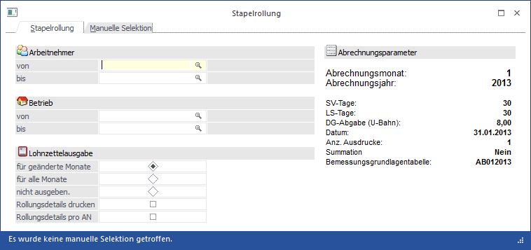
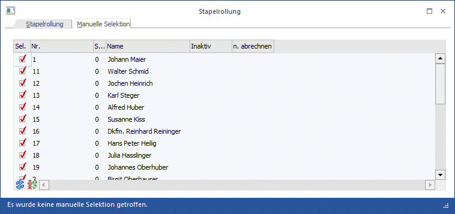

Mit der Stapelrollung, die über den Menüpunkt
1 Abrechnen
1 Stapelrollung
aufgerufen werden kann, können mehrere oder alle AN auf einmal gerollt werden, ohne dass die Einzelrollung aufgerufen werden muss.
Die Stapelrollung kann z.B. für folgende Aktionen verwendet werden:
ü Nachträgliche Bezugsänderung (kollektivvertragliche Bezugserhöhung)
ü Änderung der Zuordnung von Lohnarten zu Lohngruppen
ü Änderungen von Lohnarten

Einschränkungen:
Ø Arbeitnehmer von - bis
Hier kann eingeschränkt werden, für welche AN die Rollung durchgeführt werden soll. Wie die AN-Nummer eingegeben werden kann, dazu gibt es mehrere Möglichkeiten. Details dazu entnehmen Sie bitte dem Kapitel Aufruf einer AN-Nummer. Wird in den Feldern von - bis ein AN eingetragen, so wird daneben der Name des AN angezeigt, wobei der Name unterstrichen dargestellt wird. Durch einen Klick auf den AN wird standardmäßig der AN-Stamm aufgerufen. Über die rechte Maustaste kann aber individuell eingestellt werden, welche Aktion ausgelöst werden soll. Dabei stehen folgende Optionen zur Verfügung:

ü Arbeitnehmerstamm
Es wird der
AN-Stamm aufgerufen, wobei gleich der Datensatz des angezeigten AN angezeigt
wird.
ü Arbeitnehmerinfo
Es wird die
Arbeitnehmerinfo im Programm WinLine INFO geöffnet.
ü Jahreslohnkonto
Es wird das
Steuerfenster für das Jahreslohnkonto aufgerufen, wo der ausgewählte AN gleich
vorgeschlagen wird. Die Ausgabe muss nur mehr durchgeführt werden.
ü Arbeitnehmer Stammblatt
Es wird
das Steuerfenster für das Arbeitnehmer Stammblatt aufgerufen, wo der ausgewählte
AN gleich vorgeschlagen wird. Die Ausgabe muss nur mehr durchgeführt werden.
ü Lohnerfassung A
Es wird die
Einzelabrechnung aufgerufen, wobei gleich alle Daten des ausgewählten AN
abgerufen werden. Bei diesen Punkt ist darauf zu achten, dass ggf. die
automatischen Lohnarten abgearbeitet werden.
Die zuletzt getätigte Einstellung wird als Standard übernommen, d.h. wenn das nächste Mal nur auf den AN-Namen geklickt wird, dann wird die letzte Aktion automatisch durchgeführt. Diese Einstellung wird pro Benutzer gespeichert.
Ø Betrieb von - bis
Einschränkung der Betriebe, für die die Rollung durchgeführt werden soll.
Durch Anklicken des Filter-Buttons kann eine weitere, detailliertere Einschränkung vorgenommen werden.
Ø Lohnzettel
Hier kann entschieden werden, ob die Abrechnungsbelege gedruckt werden sollen. Dabei gibt es folgende Möglichkeiten:
ü für geänderte Monate
Mit dieser
Option werden nur die Abrechnungsbelege neu ausgedruckt, bei denen es eine
Änderung gegeben hat (wobei sich die Änderung nur auf den Auszahlungsbetrag
bezieht).
ü für alle Monate
Mit dieser
Option werden alle Abrechnungsbelege neu ausgegeben, unabhängig davon, ob durch
die Rollung eine Änderung erfolgt ist oder nicht.
ü nicht ausgeben
Mit dieser
Option werden die Abrechnungsbelege nicht ausgegeben.
Ø Rollungsdetails drucken
Wenn diese Option aktiviert ist, dann wird zusätzlich zum "normalen" Stapelrollungsprotokoll auch noch ein Detailprotokoll ausgegeben. Auf diesem Protokoll sind dann die Änderungen, die sich durch die Rollung ergeben haben, einzeln aufgeführt.
Ø Rollungsdetails pro AN
Wenn diese Option aktiviert ist, dann werden die Rollungsdifferenzen pro AN auf einer eigenen Seite gedruckt, wobei das Formular wie ein Abrechnungsbeleg aufgebaut ist. Bei Bedarf kann das Formular auch (wie der Abrechnungsbeleg) per eMail an den AN versendet werden. Für den Ausdruck stehen die Formulare
ü P03W34PAN (normaler Ausdruck)
ü P03W34PANM (eMail-Versand)
zur Verfügung.
Ø Abrechnungsparameter
Auf der rechten Seite werden die aktuellen Abrechnungsparameter angezeigt.
Manuelle Selektion
Über das Register "Manuelle Selektion" kann eine weitere Einschränkung der AN vorgenommen werden, für die eine Rollung durchgeführt werden soll.
Durch Anklicken des Anzeigen-Buttons () wird die Tabelle gemäß der Einstellung im Register "Stapelrollung" bzw. auch dem Filter gefüllt. Dabei wird standardmäßig bei allen aktiven AN die Option "Sel." aktiviert. Neben dem Selektionskennzeichen werden in der Tabelle noch die Informationen
Ø Nr.
Ø Sub.
Ø Name
Ø Inaktiv
Ø n. abrechen
angezeigt.

Wenn ein AN inaktiv ist, kann trotzdem eine Rollung durchgeführt werden, allerdings muss dieser AN manuell selektiert werden. Durch den Umkehren-Button kann die vorhandene Selektion ins Gegenteil gekehrt werden.
Durch Anklicken des Vorschau-Buttons wird das "Rollungsdetail-Protokoll" ausgegeben. Damit ist ersichtlich, welche Änderungen durch die Rollung durchgeführt werden würden.
Durch Anklicken des OK-Buttons wird die Rollung durchgeführt und die Ausdrucke werden gemäß der Einstellung erstellt. Durch Drücken der ESC-Taste wird das Fenster geschlossen.